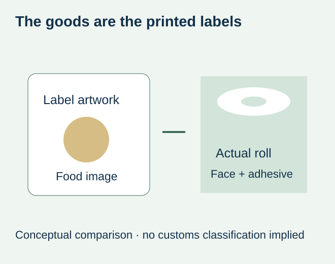
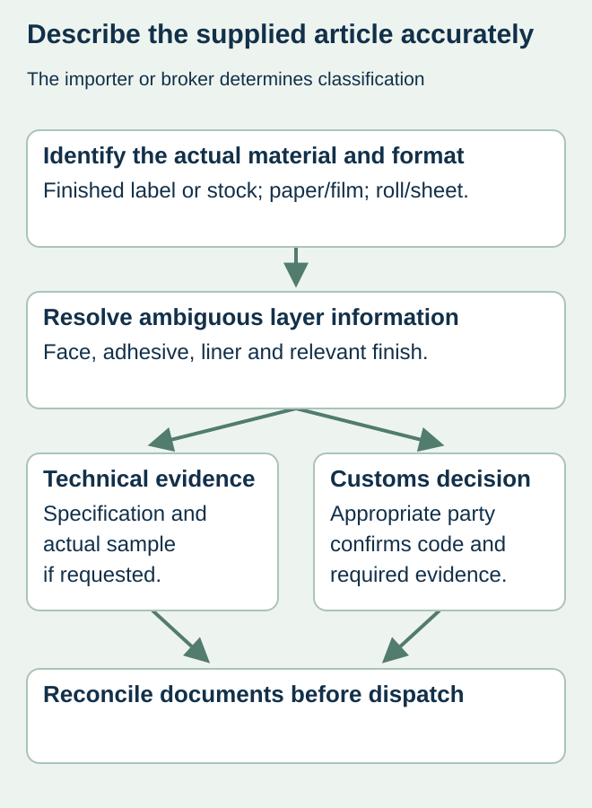

A roll of printed sauce labels carries tomatoes, ingredients and a nutrition panel in its artwork. A shipping description that only says “food labels” leaves an important ambiguity: the goods in the carton are printed labels, not the sauce pictured on them. A useful customs description identifies the article being imported.
Describe the actual material and supplied form, then give the responsible importer or broker the supporting construction details. Do not infer a tariff code from the pictured product, the brand’s industry or a generic sticker listing. Paper and plastic constructions should remain distinguishable until the proper classification is confirmed.


Separate the printed message from the physical article
A finished self-adhesive label, an unconverted adhesive-coated stock and a transfer decoration can be different articles even when the buyer casually calls each a label. Record what is actually shipped: printed or unprinted, face material, adhesive/backing arrangement and roll or sheet form. Ask the supplier to clarify a trade name that conceals those facts.
DHL Express’s customs guide identifies goods description and commodity classification as required shipment information and explains that customs may request clarification. Its guidance is not a classification ruling for this website’s products. The responsible destination customs party should determine the applicable code and whether further technical evidence or a ruling is needed.
Create a label-construction handoff
| Field | Useful factual description | Avoid |
|---|---|---|
| Actual article | Finished printed self-adhesive labels, if that is the shipment | A food name copied from the artwork |
| Face | Identified paper or plastic type where known | An unexplained marketing material name |
| Other layers | Adhesive, release liner and relevant finish | Calling every layer the label material |
| Supply form | Rolls or sheets and finished/converting state | Using a generic listing from another product |
| Quantity basis | Actual pieces, rolls and other requested measures | Changing units between invoice and packing list |
| Intended use | External food-packaging identification, if accurate | Implying direct food contact without an actual use brief |


Preserve facts without choosing a code by guesswork
If the description remains uncertain, send the responsible party a specification and, where requested, an identified sample or photograph of the actual goods. A front artwork file may explain the print but not identify the face, adhesive and backing. The construction-caliper guide helps distinguish layers when a supplier provides incomplete material information.
For a hypothetical condiment order, the approved quotation may say white paper labels while a shipping draft says plastic stickers. Resolve the difference against the actual supplied construction before dispatch. It may be a description error or an actual material change. Neither should be silently reconciled by selecting whichever wording produces an attractive estimated duty.
Keep classification, origin and delivery responsibility distinct
An agreed DAP or DDP arrangement does not by itself determine the goods classification. A business address, the country printed in the product artwork and the origin of the imported labels can also refer to different things. Obtain the actual required origin information from the responsible supplier and customs parties rather than deriving it from design copy.
No tariff heading, duty rate or origin determination is assigned in this article. Those depend on actual facts, destination rules and the relevant authority. Purchasing’s job is to provide an accurate, consistent construction record and retain the decision received from the appropriate party.
Check the dispatch documents against the supplied item
Compare the accepted product description, invoice, packing list and electronic shipment data. Keep any corrections linked to the order and identify the person who resolved the technical or customs question. The delivery-basis guide covers who handles the import obligations; it does not replace this goods-description check.
Revisit the record after a material or supply-form substitution. The decorative artwork can stay identical while the physical goods change. A repeat-order filename is therefore not enough evidence that an old shipment description still represents the next parcel of food-packaging labels.
Discuss the unresolved label requirement
Send the actual face/adhesive/liner description, printed or blank status, roll/sheet format, quantities and destination. Let the responsible importer or broker confirm the applicable classification. Prepare a label specification inquiry. The contact page opens an email draft and lists email or WhatsApp for attachments. Supply, proof options, testing, pricing and timing require project confirmation.